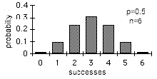
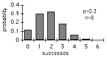

Binomial Distribution
Menu location: Analysis_Distributions_Binomial.
A binomial distribution occurs when there are only two mutually exclusive possible outcomes, for example the outcome of tossing a coin is heads or tails. It is usual to refer to one outcome as "success" and the other outcome as "failure".
If a coin is tossed n times then a binomial distribution can be used to determine the probability, P(r) of exactly r successes:
Here p is the probability of success on each trial, in many situations this will be 0.5, for example the chance of a coin coming up heads is 50:50/equal/p=0.5. The assumptions of above calculation are that the n events are mutually exclusive, independent and randomly selected from a binomial population. Note that ! is a factorial and 0! is 1 as anything to the power of 0 is 1.
In many situations the probability of interest is not that associated with exactly r successes but instead it is the probability of r or more (≥r) or at most r (≤r) successes. Here the cumulative probability is calculated:
The mean of a binomial distribution is p and its standard deviation is sqr(p(1-p)/n). The shape of a binomial distribution is symmetrical when p=0.5 or when n is large.


When n is large and p is close to 0.5, the binomial distribution can be approximated from the standard normal distribution; this is a special case of the central limit theorem:
Please note that confidence intervals for binomial proportions with p = 0.5 are given with the sign test.
Technical Validation
StatsDirect calculates the probability for exactly r and the cumulative probabilities for (≥,≤) r successes in n trials. The gamma function is a generalised factorial function and it is used to calculate each binomial probability. The core algorithm evaluates the logarithm of the gamma function (Cody and Hillstrom, 1967; Abramowitz and Stegun 1972; Macleod, 1989) to the limit of 64 bit precision.
Γ(*) is the gamma function:

Γ(1)=1
Γ(x+1)=xΓ(x)
Γ(n)=(n-1)!